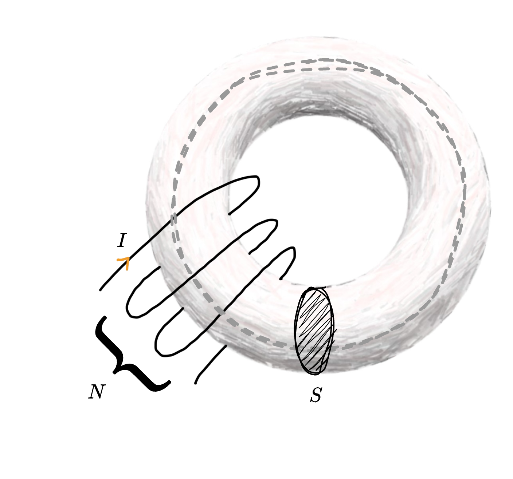

Definizione - Permeabilità magnetica
Ogni materiale è caratterizzato da un valore di permeabilità magnetica \( \mu\) (misurata in Henry su metro \( \; {}^{\mathrm{ \, H }} /_{\mathrm{ \, m }\;}\)), per cui vale \[ \underline{B} = \mu \cdot \underline{H} \] dove
- \( \underline{H}\) è il campo magnetico (misurato in Ampere su metro \( \frac{\mathrm{ \, A }}{\mathrm{ \, m }}\))
- \( \underline{B}\) è il vettore di induzione magnetica (misurato in Tesla \( \mathrm{ \, T }\)) e descrive il "campo magnetico interno al materiale";
- \( \mu_0\) è la permeabilità magnetica del vuoto;
- \( \mu_R\) è la permeabilità magnetica del materiale.
- se \( \mu_R = 1\) (valore caratteristico dell'aria) si ha una condizione di vuoto magnetico. Si ha che il materiale non altera il campo magnetico;
- se \( \mu_R \lt 1\) si parla di materiali diamagnetici e si ha che il campo magnetico è "respinto" dal materiale;
- se \( \mu_R \gt 1\) si parla di materiali paramagnetici;
- se \( \mu_R \gt\gt 1\) (ndr, molto maggiore di \( 1\) e in genere compreso tra \( 10^3\) e \( 10^5\)) si parla di materiali ferromagnetici e si ha che le linee di campo sono "attirate" dal materiale.
Definizione - Domini di Weiss in materiali ferromagnetici e saturazione magnetica
Considerando un materiale ferromagnetico, è possibile considerare che è costituito da strutture più piccole, dette domini di Weiss, la cui orientazione magnetica è uniforme  Nel caso non sia presente un campo magnetico, tali domini hanno direzioni casuali: nel caso invece sia presente un campo magnetico, essi si orientano in direzione del campo fino a raggiungere saturazione
Nel caso non sia presente un campo magnetico, tali domini hanno direzioni casuali: nel caso invece sia presente un campo magnetico, essi si orientano in direzione del campo fino a raggiungere saturazione 
Definizione - Macchina elettrica
Una macchina elettrica è un dispositivo formato da più circuiti accopiati magneticamente, che converte l'energia elettrica in un'altra forma di energia.
Si ha infatti che imposta una tensione \( V_1\) nel primo circuito, è generata una corrente \( I_1\). Si ha quindi che è generato un campo magnetico \( \underline{H}_1\) che comporta un vettore induzione magnetica \( \underline{B}\) secondo la relazione costitutiva \[ \underline{B} = \mu_0 \cdot \mu_R \cdot \underline{H} \] Tale vettore \( \underline{B}\) genera della forza elettromotrice (della tensione) che può generare una corrente \( I_2\) nel secondo circuito.
Dato che l'obiettivo è massimizzare la forza elettromotrice generata, una soluzione è aumentare la permeabilità magnetica utilizzando un materiale ferromagnetico la cui permeabilità magnetica relativa \( \mu_R\) ha valori elevati.
Si ha infatti che imposta una tensione \( V_1\) nel primo circuito, è generata una corrente \( I_1\). Si ha quindi che è generato un campo magnetico \( \underline{H}_1\) che comporta un vettore induzione magnetica \( \underline{B}\) secondo la relazione costitutiva \[ \underline{B} = \mu_0 \cdot \mu_R \cdot \underline{H} \] Tale vettore \( \underline{B}\) genera della forza elettromotrice (della tensione) che può generare una corrente \( I_2\) nel secondo circuito.
Dato che l'obiettivo è massimizzare la forza elettromotrice generata, una soluzione è aumentare la permeabilità magnetica utilizzando un materiale ferromagnetico la cui permeabilità magnetica relativa \( \mu_R\) ha valori elevati.
Definizione - Ciclo di isteresi nell'elettromagnetismo
I materiali ferromagnetici sono caratterizzati da un comportamento magnetico (ovvero da un vettore induzione magnetica \( \underline{B}\)) non esprimibile come funzione del campo magnetico \( \underline{H}\).
Tale relazione è rappresentabile su un piano come un ciclo di isteresi (ndr, l'isteresi è un fenomeno in cui una grandezza dipendente da un'altra assume valori influenzati anche da valori precedenti).
Considerando un materiale ferromagnetico vergine (in cui si ha che \( \underline{H} = 0\) e \( \underline{B} = 0\)), si ha che applicando un campo magnetico \( \underline{H}\), la magnetizzazione (indicata con \( B\)) aumenta fino alla saturazione magnetica del materiale (corrispondente ad un valore \( B_{max}\)), descrivendo una curva detta di prima magnetizzazione. Invertendo il campo magnetico (rendendolo quindi negativo), la magnetizzazione del materiale sarà nulla (ndr, \( B = 0\)) quando il campo magnetico avrà valore \( -H_C\), dove \( H_C\) è detto campo coercitivo
Invertendo il campo magnetico (rendendolo quindi negativo), la magnetizzazione del materiale sarà nulla (ndr, \( B = 0\)) quando il campo magnetico avrà valore \( -H_C\), dove \( H_C\) è detto campo coercitivo  A questo punto, all'aumentare dell'intensità del campo magnetico, il materiale si magnetizzerà in direzione opposta fino a raggiungere il valore di \( -B_{max}\).
A questo punto, all'aumentare dell'intensità del campo magnetico, il materiale si magnetizzerà in direzione opposta fino a raggiungere il valore di \( -B_{max}\).
Successivamente, all'inversione del campo magnetico, la magnetizzazione avrà un comportamento analogo a quello appena descritto fino al raggiungimento di una magnetizzazione \( B_{max}\) corrispondente ad un campo di intensità \( H_{max}\). Si ha quindi la rappresentazione di un ciclo di isteresi
Si ha quindi la rappresentazione di un ciclo di isteresi  Considerando l'area interna al ciclo di isteresi, è possibile ottenere l'energia dissipata \( w_{ist}\) per ogni ciclo.
Considerando l'area interna al ciclo di isteresi, è possibile ottenere l'energia dissipata \( w_{ist}\) per ogni ciclo.
Considerando tale valore, è possibile calcolare la potenza specifa dissipata \( P_{ist}\) (misurata in Watt su metri cubi \( \; {}^{\mathrm{ \, W }} /_{\mathrm{ \, m^3 }\;}\)) per effetto Joule come \[ P_{ist} = w_{ist} \cdot f \] dove \( f\) è la frequenza del circuito.
Tale relazione è rappresentabile su un piano come un ciclo di isteresi (ndr, l'isteresi è un fenomeno in cui una grandezza dipendente da un'altra assume valori influenzati anche da valori precedenti).
Considerando un materiale ferromagnetico vergine (in cui si ha che \( \underline{H} = 0\) e \( \underline{B} = 0\)), si ha che applicando un campo magnetico \( \underline{H}\), la magnetizzazione (indicata con \( B\)) aumenta fino alla saturazione magnetica del materiale (corrispondente ad un valore \( B_{max}\)), descrivendo una curva detta di prima magnetizzazione.
A seguito di ciò, tuttavia, nel caso il campo magnetico diminuisse fino a diventare nullo, il materiale mantiene parte della sua magnetizzazione (\( B_R\), magnetizzazione residua)
Successivamente, all'inversione del campo magnetico, la magnetizzazione avrà un comportamento analogo a quello appena descritto fino al raggiungimento di una magnetizzazione \( B_{max}\) corrispondente ad un campo di intensità \( H_{max}\).
Considerando tale valore, è possibile calcolare la potenza specifa dissipata \( P_{ist}\) (misurata in Watt su metri cubi \( \; {}^{\mathrm{ \, W }} /_{\mathrm{ \, m^3 }\;}\)) per effetto Joule come \[ P_{ist} = w_{ist} \cdot f \] dove \( f\) è la frequenza del circuito.
Definizione - Materiali ferromagnetici dolci e duri
È possibile suddividere i materiali ferromagnetici in base alle caratteristiche del ciclo di isteresi
Si ha infatti che i materiali duri, rispetto ai materiali dolci, sono:
- caratterizzati da una bassa permeabilità magnetica relativa \( \mu_R\) rendendo meno "facile" la magnetizzazione (è necessario un campo magnetico \( \underline{H}\) più intenso);
- caratterizzati da un campo coercitivo \( H_C\) maggiore, rendendo la smagnetizzazione più "difficile";
- caratterizzati da una maggiore energia dissipata (data l'area maggiore del ciclo di isteresi);
- caratterizzati da una maggiore magnetizzazione residua \( B_R\) in assenza di campo magnetico.
Definizione - Flusso magnetico
Considerando un campo magnetico generato dal passaggio della corrente, il flusso magnetico \( \Phi\) quantifica il campo magnetico che attraversa una data superficie.
Considerando una spira attraversata da corrente elettrica, si ha che il campo magnetico generato assume una forma solenoidale
Al fine quindi di creare un tubo di flusso, è possibile considerare di utilizzare un toroide di materiale ferromagnetico attorno cui sono avvolte delle spire di conduttore elettrico È possibile notare che la permeabilità magnetica del materiale ferromagnetico (\( \mu_{\text{ferromagn.}} \simeq 10^4\)) è significativamente maggiore rispetto a quella dell'aria (\( \mu_{\text{aria}} = 1\)). Ciò significa che il rapporto di isolamento del tubo di flusso, dato dal rapporto tra le permeabilità del materiale ferromagnetico e dell'aria, è approssimativamente \( 10^4\). Questo elevato rapporto di permeabilità comporta una riduzione delle perdite nel tubo di flusso (anche se non paragonabile all'isolamento dei conduttori nei circuiti elettrici). Tuttavia, è da considerare che il materiale ferromagnetico è soggetto a saturazione magnetica.
Considerando una spira attraversata da corrente elettrica, si ha che il campo magnetico generato assume una forma solenoidale
In particolare, si ha che considerando che si fornisce una corrente \( I\), si ha che la corrente \( i_C\) che scorre effettivamente nel circuito è uguale a \[ i_C = N \cdot I \] Considerando di utilizzare del materiale ferromagnetico, si avrebbe che le linee di campo sarebbero coinvogliate.
Al fine quindi di creare un tubo di flusso, è possibile considerare di utilizzare un toroide di materiale ferromagnetico attorno cui sono avvolte delle spire di conduttore elettrico

Dimostrazione - Legge di Kirchhoff per i potenziali scalari magnetici
Dato il teorema
Enunciato:
Considerando un circuto magnetico, la sommatoria dei potenziali scalari magnetici \( \varphi_m\) lungo una linea chiusa è nulla, ovvero \[ \sum_{k = 1}^{\#} \varphi_{m, k} = 0 \]
Dimostrazione:
Per dimostrare questo teorema, consideriamo un generico circuito magnetico composto da materiale ferromagnetico e avvolgimenti di conduttore e assumiamo che sia uno spazio tridimensionale \( \mathbb{R}^3\).
Immaginiamo di isolare il circuito magnetico dagli avvolgimenti di conduttore, definendo questa regione come \( \mathbb{R}^{3*}\). Poiché gli avvolgimenti non sono presenti, si ha che data l'assenza di corrente anche il campo magnetico \( \underline{H}\) generato è nullo e quindi si ha che \( \underline{H}\) è un campo conservativo \[ \underset{\mathbb{R}^{3*}}{\oint} \underline{H} \ dl = i_C = 0 \quad \implies \quad \underline{H} \ \text{è un campo conservativo} \] Dato che è possibile scrivere un campo conservativo come il gradiente di una funzione scalare (in questo caso il potenziale scalare) \[ \underline{H} = -\nabla \varphi_m \] e quindi \[ \sum_{k = 1}^{\#} \varphi_{m, k} = 0 \] che dimostra la proposizione.
Immaginiamo di isolare il circuito magnetico dagli avvolgimenti di conduttore, definendo questa regione come \( \mathbb{R}^{3*}\). Poiché gli avvolgimenti non sono presenti, si ha che data l'assenza di corrente anche il campo magnetico \( \underline{H}\) generato è nullo e quindi si ha che \( \underline{H}\) è un campo conservativo \[ \underset{\mathbb{R}^{3*}}{\oint} \underline{H} \ dl = i_C = 0 \quad \implies \quad \underline{H} \ \text{è un campo conservativo} \] Dato che è possibile scrivere un campo conservativo come il gradiente di una funzione scalare (in questo caso il potenziale scalare) \[ \underline{H} = -\nabla \varphi_m \] e quindi \[ \sum_{k = 1}^{\#} \varphi_{m, k} = 0 \] che dimostra la proposizione.
Dimostrazione - Legge di Kirchhoff per i potenziali scalari magnetici
Dato il teorema
Enunciato:
Considerando una superficie chiusa in circuto magnetico, la sommatoria dei flussi magnetici è nulla, ovvero \[ \sum_{k = 1}^{\#} \Phi_{k} = 0 \]
Dimostrazione:
Per dimostrare questo teorema, iniziamo definendo il flusso magnetico attraverso una superficie, indicato con \( \Phi\), come l'integrale del campo magnetico \( \underline{B}\) su di essa, cioè \[ \Phi = \iint \underline{B} \ dS \] Ora, la legge di Ampère dice che il flusso magnetico lungo una linea chiusa è sempre nullo, ovvero \[ \oint \underline{B} \ dS = 0 \] Ciò significa che la somma del flusso magnetico entrante in una superficie deve essere uguale alla somma del flusso magnetico uscente.
Quindi, considerando che il flusso totale attraverso la superficie è la somma dei flussi magnetici \( \Phi_k\), \[ \sum_{k = 1}^{\#} \Phi_{k} = 0 \] si è dimostrata la proposizione.
Quindi, considerando che il flusso totale attraverso la superficie è la somma dei flussi magnetici \( \Phi_k\), \[ \sum_{k = 1}^{\#} \Phi_{k} = 0 \] si è dimostrata la proposizione.
Dimostrazione - Legge di Ohm magnetica (legge di Hopkinson)
Dato il teorema
Enunciato:
Considerando un circuito magnetico, si ha che è possibile relazionare la forza magnetomotrice (\( N \cdot I\)) con il flusso magnetico secondo la relazione \[ N \cdot I = \mathcal{R} \cdot \Phi \] dove \( \mathcal{R}\) è detta riluttanza (misurata in \( \mathrm{ \, H }^{-1}\)) ed è una grandezza che rappresenta l'opposizione di un materiale al transito del flusso magnetico.
Si ha inoltre che la riluttanza è uguale a \[ \mathcal{R} = \frac{L}{\mu \cdot S} \] dove:
Si ha inoltre che la riluttanza è uguale a \[ \mathcal{R} = \frac{L}{\mu \cdot S} \] dove:
- \( L\) è la lunghezza del circuito;
- \( \mu\) è la permeabilità magnetica del materiale;
- \( S\) è la superficie del circuito.
Dimostrazione:
Per dimostrare questo teorema, consideriamo un generico circuito magnetico
per cui si ha che \[ \Phi = \iint \underline{B} \ dS \] Ora, dato che il vettore induzione magnetica \( \underline{B}\) è un flusso omogeneo su tutta la superficie del circuito, si ha che \[ \begin{array}{ccl} \Phi & = & \iint \underline{B} \ dS \\ & = & B \cdot \iint \ dS \\ & = & B \cdot S \end{array} \] da cui è possibile dedurre che \[ \Phi = B \cdot S \quad \implies \quad B = \frac{\Phi}{S} \] Data ora la relazione \[ \underline{B} = \mu \cdot \underline{H} \quad \implies \quad \underline{H} = \frac{\underline{B}}{\mu} \] si ha che per la legge di Ampere è possibile scrivere \[ \oint \underline{H} \ dl = i_C = N \cdot I \] e sostituendo \[ \begin{array}{ccl} N \cdot I & = & \oint \underline{H} \ dl \\ & \overset{\underline{H} = \; {}^{\underline{B}} /_{\mu\;}}{=} & \oint \frac{\underline{B}}{\mu} \ dl \\ & \overset{B = \; {}^{\Phi} /_{S\;}}{=} & \oint \frac{\Phi}{S} \cdot \frac{1}{\mu} \ dl \end{array} \] Ora, dato che lungo la curva il flusso, la permeabilità magnetica e la sezione sono costanti rispetto alla curva, si ha che \[ \begin{array}{ccl} N \cdot I & = & \oint \frac{\underline{\Phi}}{S} \cdot \frac{1}{\mu} \ dl \\ & = & \frac{\Phi}{S \cdot \mu} \cdot \underbrace{\oint \ dl}_{L} \\ & = & \frac{\Phi}{S \cdot \mu} \cdot L \end{array} \] Da questa relazione è quindi possibile dedurre che \[ N \cdot I = \Phi \cdot \underbrace{\frac{L}{S \cdot \mu}}_{\mathcal{R}} \] che dimostra la proposizione.